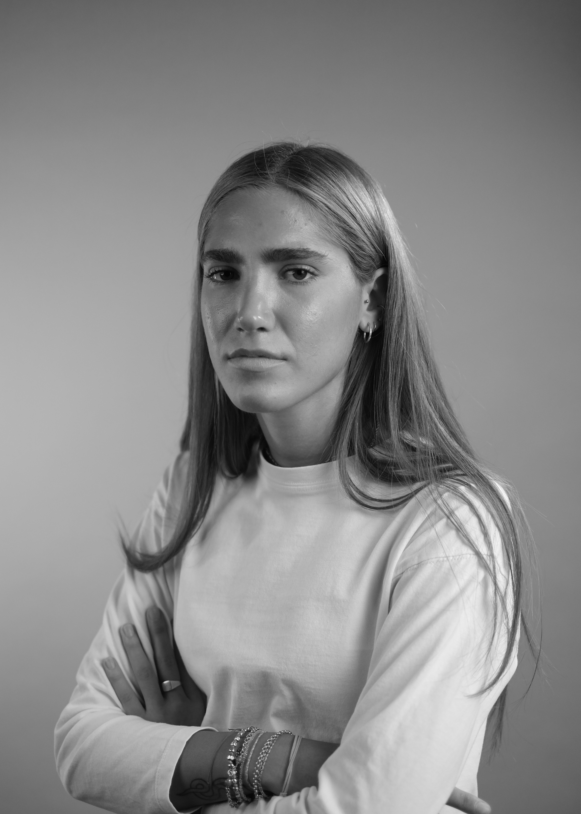

TEA
CAPICCHIONI
Studentessa di design.


Cosa faccio
Frequento il secondo anno del corso di laurea in Design presso l'Università degli Studi della Repubblica di San Marino. Il mio percorso formativo è iniziato con studi in ambito tecnico-sanitario, come odontotecnico, esperienza che mi ha permesso di sviluppare capacità manuali.
Da dove vengo
Sono nata e cresciuta nella Repubblica di San Marino, un luogo che, pur essendo piccolo, offre un ambiente stimolante e ricco di ispirazione.